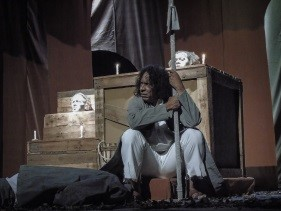
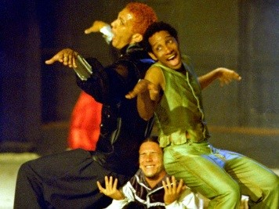
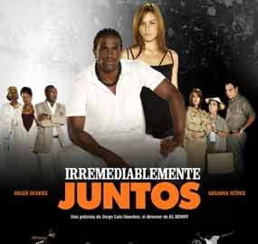
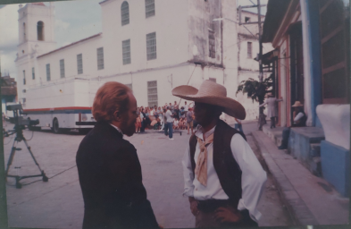
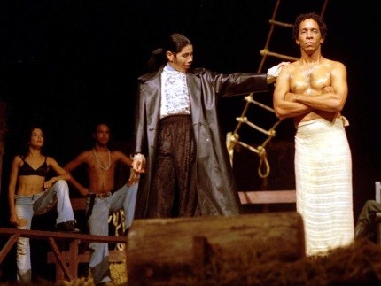

Alfredo Reyes Martínez
Graduado de la Universidad de las Artes (ISA). Amplia trayectoria en cine, televisión y teatro.
Trayectoria como Actor

Inició en teatro con Galápago (1988). Ha formado parte de Teatro Buendía, Pequeño Teatro de la Habana, Estudio Teatral Vivarta y Vital Teatro. Actualmente es actor y director del grupo Teatro Espacio de la Habana.
Ha participado en múltiples festivales nacionales e internacionales, obteniendo reconocimientos por actuación y popularidad. Ha trabajado con directores como María Elena Ortega, Flora Lawten, Antonia Fernández, Alejandro Palomino y Julio Cesar Ramírez.
Formación y Profesores

Principales Profesores
- Filander FunesDirector teatral del Salvador
- María Elena OrtegaDirectora teatral cubana
- José MiliánDirector y Dramaturgo cubano
- Ivan TenorioCoreógrafo del Ballet Nacional de Cuba
- Felix PadrónCirco Nacional de Cuba
- Angel MenendezOpera Nacional de Cuba
Cursos de Postgrado y Talleres
Santiago García y Patricia Ariza, Colombia
Denisse Stoklos, Brasil
Patrice Pavís, Francia
Ladislav Fialka, Checoslovaquia
Grupo "La Zaranda", España
Compañía "Ridotto", Italia
Francis Ford Coppola, Estados Unidos
Eduardo Camacho, España
Oswaldo Dragún, Argentina
Miguel Rubio y Teresa Ralli, Perú
Julia Varley y Odín Theatre
Cursos Impartidos
Cine y Televisión


🎥 Cine
| Trabajo | Personaje | Guion | Dirección |
|---|---|---|---|
| "Estorbo" (Cubano-Brasileña) | Reportero de TV | Chico Buarque | Rui Guerra |
| "Irremediablemente Juntos" | Mokongo | Jorge L. Sanchez | Jorge L. Sanchez |
| "Bolívar" (Cubano-Venezolana) | El Haitiano | - | - |
📡 Televisión
| Obra | Personaje | Dirección |
|---|---|---|
| "La Otra Historia" | Raúl | Armando Toledo |
| "Mercaderes del Ama" | Nano | Sherdon Britman |
| "Hasta Encontrarnos" (Antena 3) | Hugo (El Monje) | Jorge L. Sánchez |
| "Las Huérfanas de la Obrapía" | Chano | Rafael González |
| "Rotonda" | Sombrilla | Armando Toledo |
| "Hora 92" | Ismael | Armando Toledo |
Eventos y Reconocimientos

Repertorio Teatral
Como Actor
- "La Noche que Jamás Existió" - Humberto Robles (2024)
- "Alocada Avaricia" - Roberto Espinal (2021)
- "Luz Negra" - Álvaro Menen Desleal (2019)
- "Galápago" - Salvador Lémis (2018)
- "Desamparado" - Albero Pedro (2017)
- "En Busca del barquito de papel" - Silvia Ortoff (2015)
- "El Yuma y el Cubano" - Teatro dell a Ginestra, Italia (2014)
- "La Emigración es una Zorra" - Italia (2013)
- "Galileo Galilei" - Bertolt Brecht (2012)
- "Tío Vania" - Premio de la crítica Cuba 2010
- "La visita de la vieja dama" - Friedrich Durrenmatt (2006)
- "Otelo, el Moro de Venecia" - Shakespeare (2006)
- "Calcinados o Elogio del Barrendero" - Manuel Martínez (2005)
- "Muerte de amor en Verona" - Shakespeare (2001)
- "Historia de un Caba-yo" - Mark Rezovski/Tolstoi (2000)
- "Sueño de una noche de verano" - Shakespeare (1999)
- "Vaselina" - Jim Jacobs (1998)
- "Esperando a Godot" - Samuel Beckett (1996)
- "Mahagonny" - Bertolt Brecht (1995)
Como Director
- "No se Elige ser un Héroe" - David de Sola (2022)
- "Luz Negra" - Álvaro Menen Desleal (2019)
- "Galápago" - Salvador Lémis
- "Desamparado" - Albero Pedro (2017)
- "En Busca del barquito de papel" - Silvia Ortoff (2015)
- "La Emigración es una Zorra" - Co-dirección (2014)